BMW 330ci car PC
The main challenge is to create a screen bezel that appears as if it
were factory fitted. The rest of the install can be easily hidden
under carpets/trim pieces
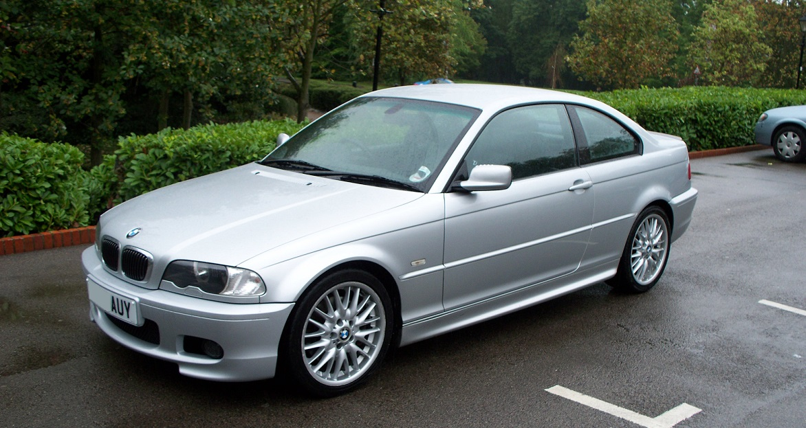
I decided to start with an original sat nav head unit as a base for
the build
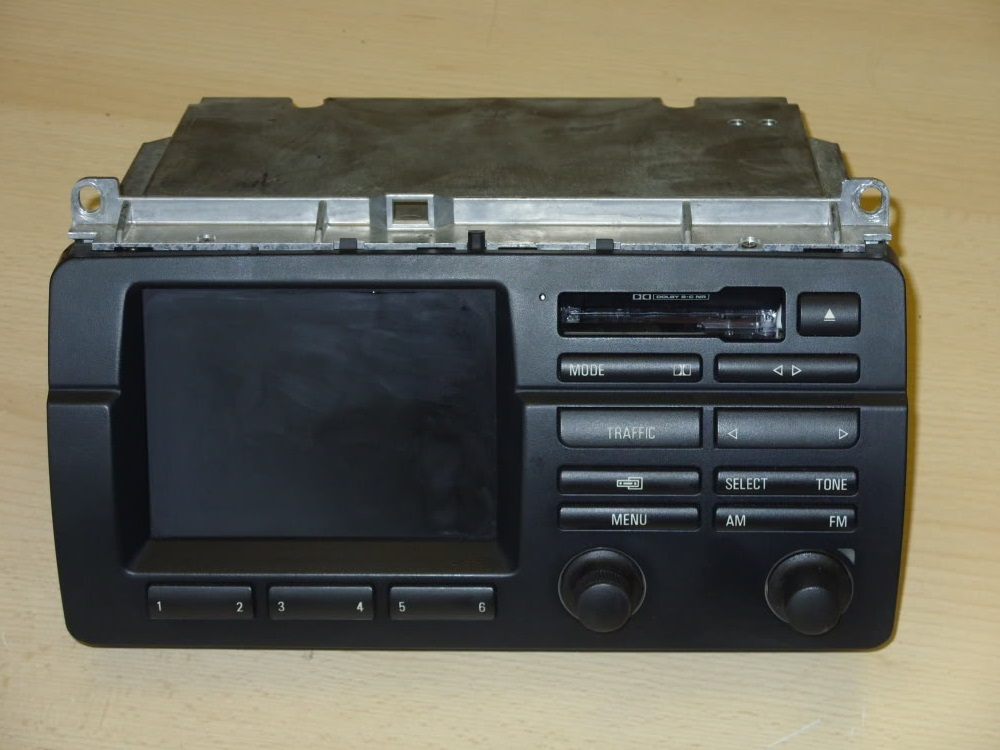
Which was then modifed into the following by cutting out plastic and
crafting an internal frame for a 7" VGA touch screen using fibreglass
and body filler. Primed and painted a matt black to match the original
plastic as closely as possible
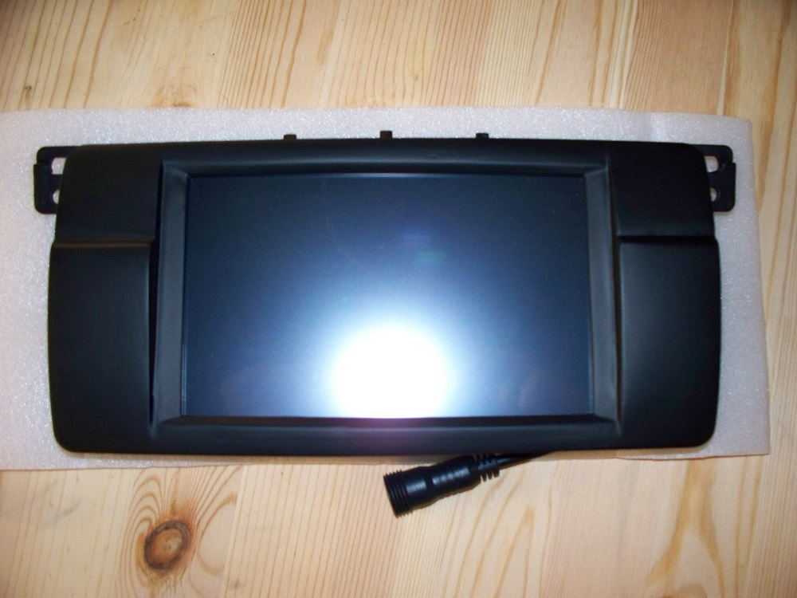
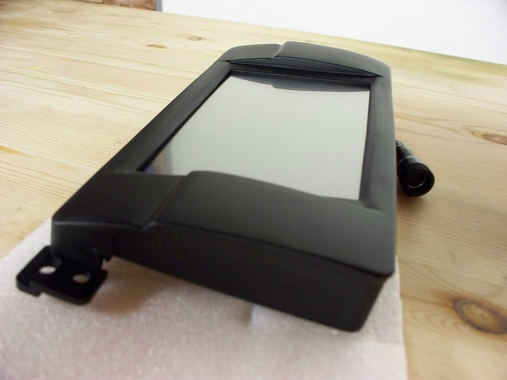
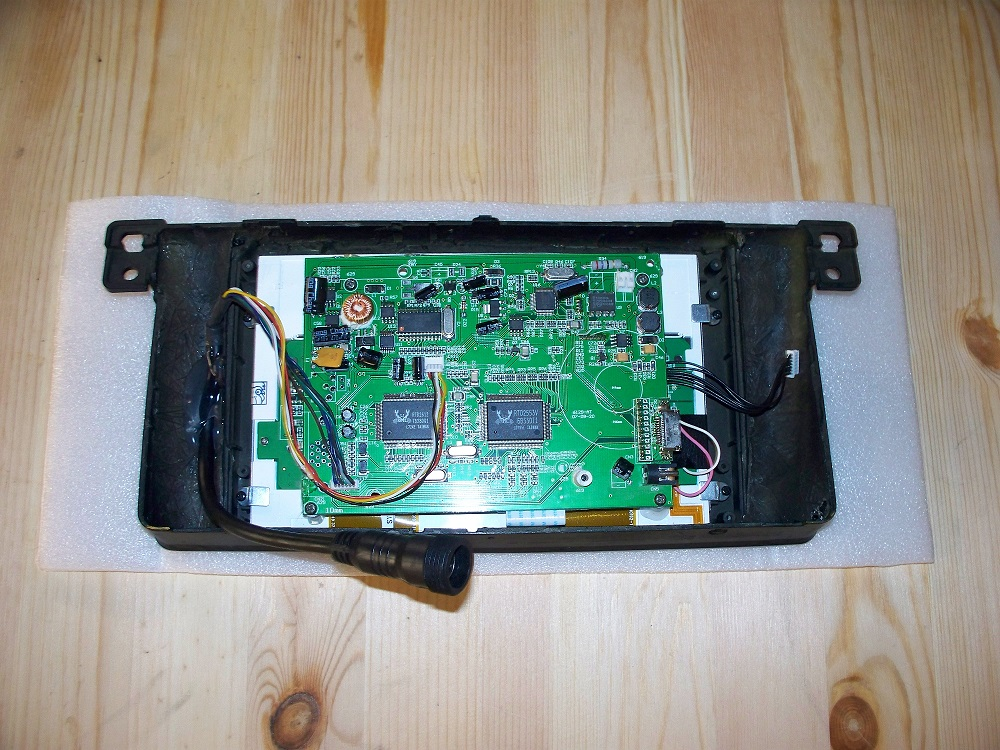
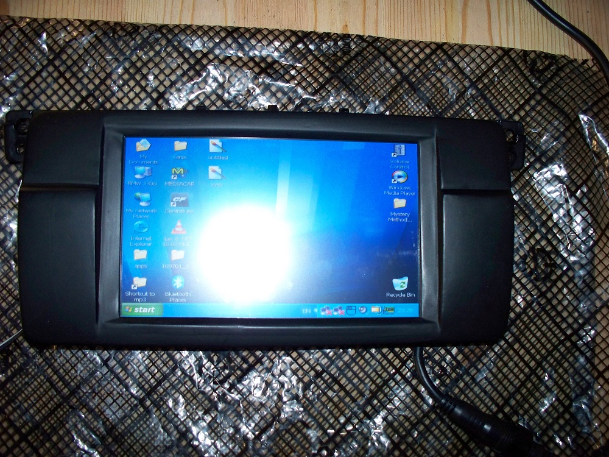
4.1 surround capable Mini ITX based pc, case built from sheet acrylic,
installed in boot via carpeted MDF suspended shelf. PSU is a 12V ATX
vehicle supply with ignition key on/shutdown triggering and several
other useful features. Battery power is supplyed via a custom
relay/fuse board
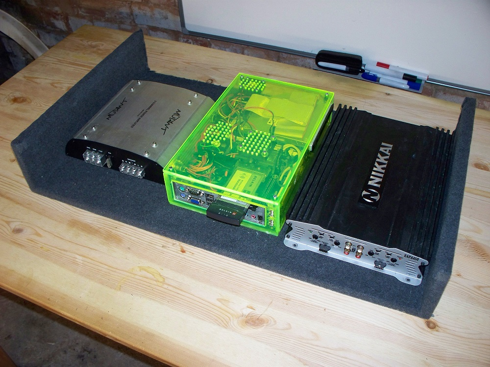
Installed in the vehicle. Controls (Volume pot, usb slot, screen
setting control, hard power switch) mounted in the ash tray
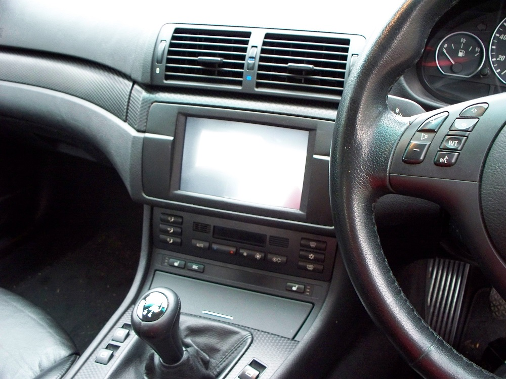
Astra 1.6 car PC
Similar deal, different car. Again, a custom bezel is required to
adapt an arbitray shape to the factory dash
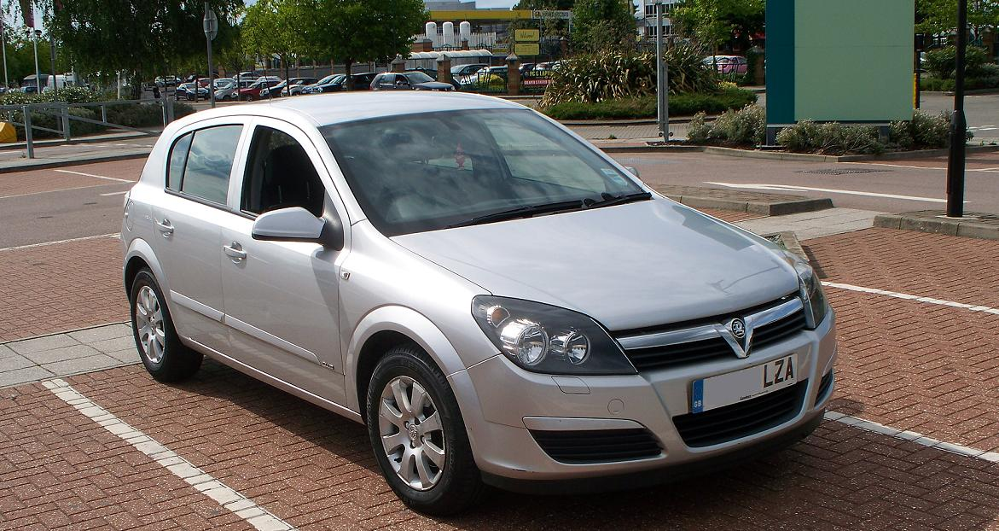
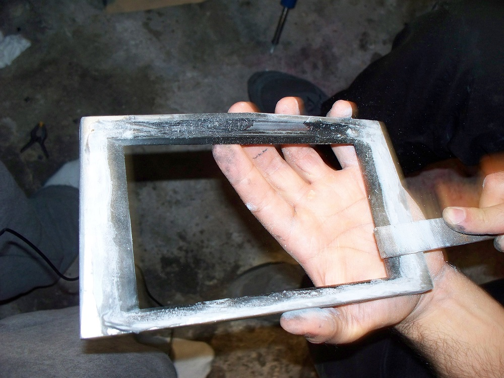
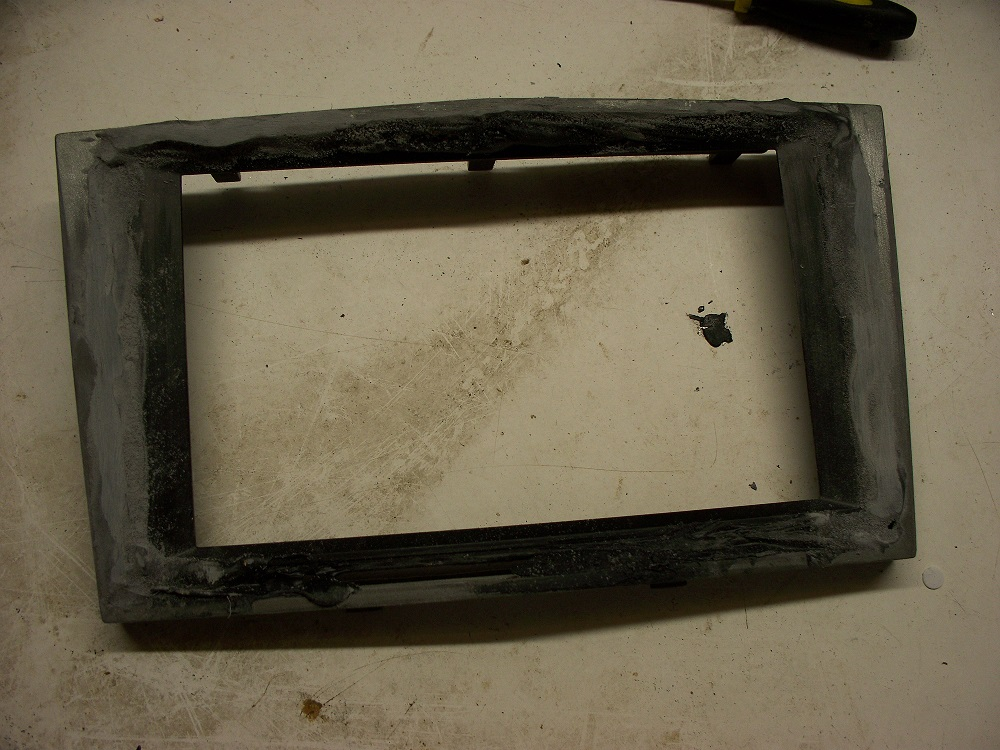
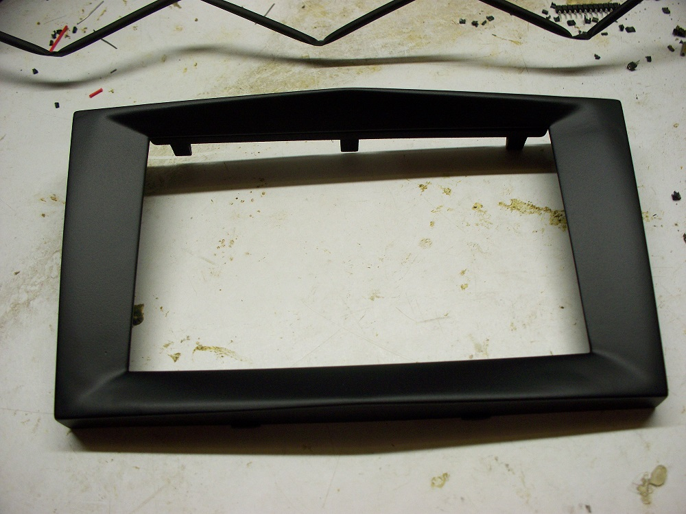
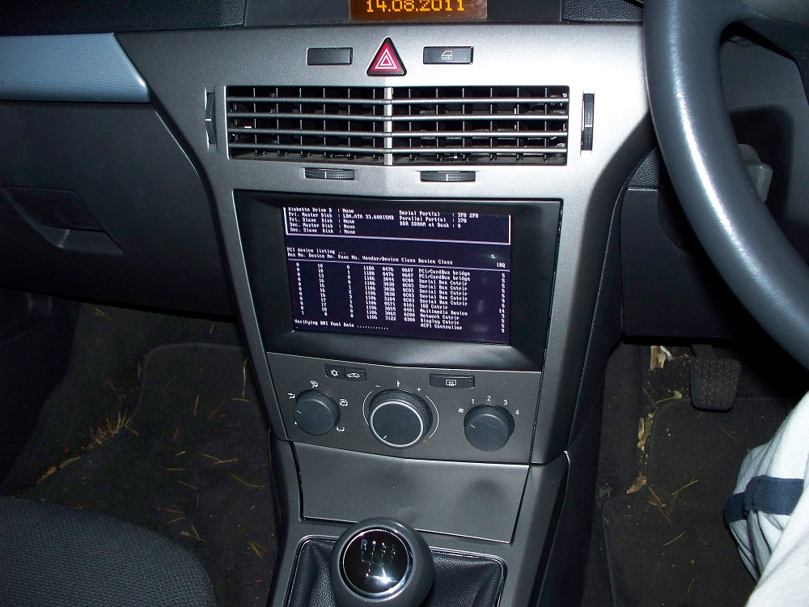
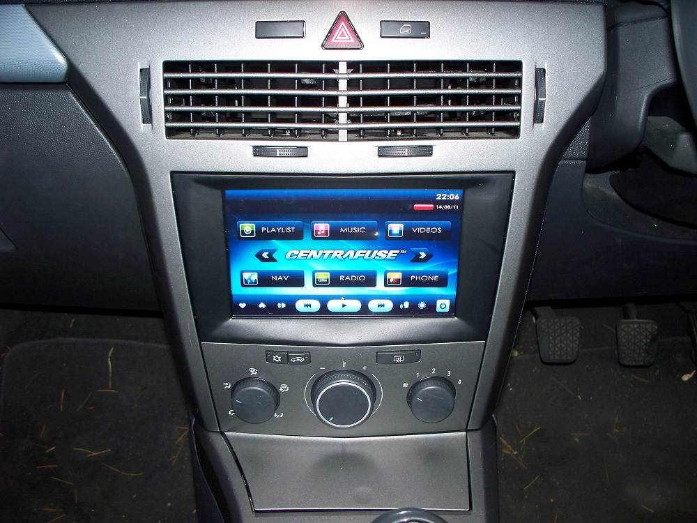